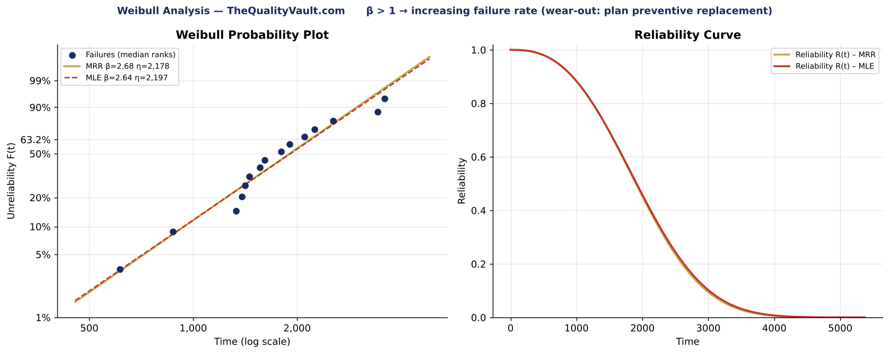
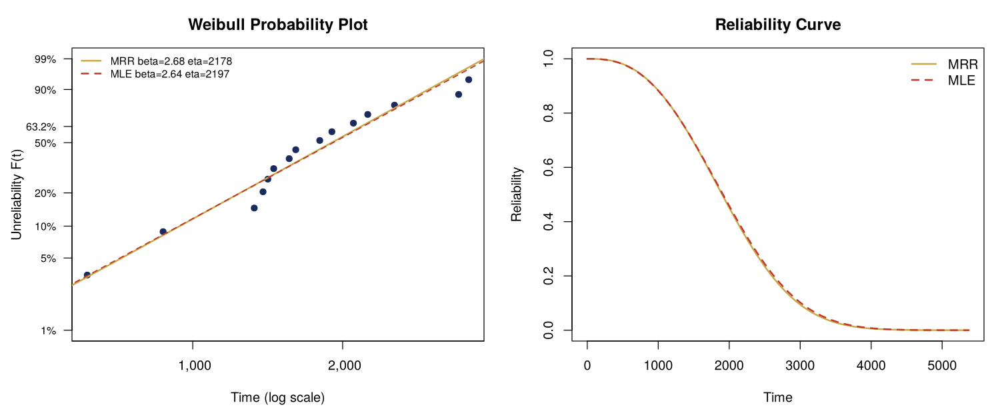

2-parameter Weibull fit with suspensions (units still running): shape β, characteristic life η, B1/B10/B50 life, MTTF and reliability at a chosen time — by median rank regression (MRR) and maximum likelihood (MLE). Excel, Python and R give identical results.
Start on the Example tab to see a finished analysis, then switch to Blank Template for your own data.
The Excel, Python and R versions give the same results on the worked example.
Python needs the packages named on its download card; R uses base R. Both run the worked example with demo and accept your own CSV.
python weibull.py demo
python weibull.py --csv my_data.csv --time hours --status status --at 1000 --save weibull.png
Rscript weibull.R
| MRR | MLE | |
|---|---|---|
| β | 2.683 | 2.644 |
| η (hours) | 2,178 | 2,197 |
| B10 life | 941 | 938 |
| MTTF | 1,937 | 1,952 |
| R(1,000 h) | 0.883 | 0.883 |
| β > 1 → wear-out; plan preventive replacement. |
MRR: Johnson adjusted ranks, Benard median ranks, regression of x = ln t on y. MLE: profile likelihood solved by bisection. In the Excel chart-helper columns, N/A values are deliberate (they keep unused rows off the probability plot).

